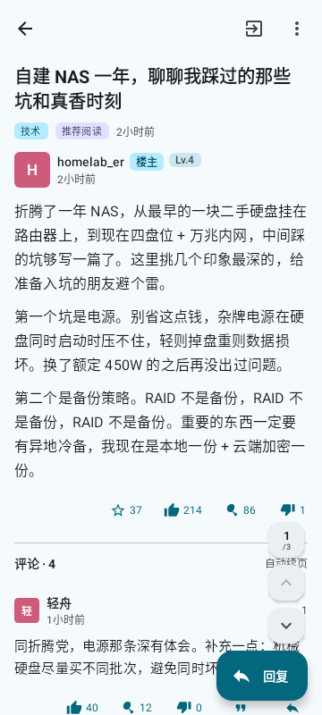
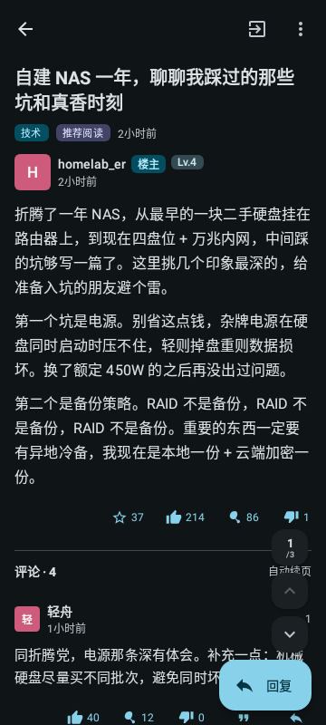

draw
原生渲染Native rendering
帖子、评论、投票和 NodeQuality 跑分表都是 Compose 组件。正文一律贪心折行并补汉字 / 西文间隙，跑分表保留钉住首列的横向滚动。
Posts, comments, polls and NodeQuality reports are Compose components. Body text greedily wraps with CJK / Latin spacing, and benchmark tables keep a pinned first column.


cloud_off
离线优先Offline first
Room 离线缓存与已读标记、本机浏览历史、每帖记住阅读位置。地铁里没信号也能接着读。
Room offline cache, read marks, local history and a remembered scroll position per post. Keep reading with no signal.
palette
M3 主题Material You
动态取色跟随壁纸，也可选角色预设或自定义种子色。默认是石墨青 #35606E。
Dynamic colour from your wallpaper, character palettes, or your own seed. Ships with 石墨青 #35606E.
notifications_active
消息通知Notifications
WorkManager 轮询、未读数、互动与私信会话、关注与粉丝，一处收齐。
WorkManager polling, unread counts, mentions and replies, DMs, follows — all in one tab.
devices
自适应布局Adaptive layout
4 个 tab，宽窗口由 NavigationSuiteScaffold 换成侧边 rail，每个 tab 各有返回栈。
Four tabs; wide windows swap the bar for a side rail via NavigationSuiteScaffold, each tab keeping its own back stack.
forum
完整互动Full interaction
发帖、评论、编辑自己的内容，点赞 / 反对 / 投喂鸡腿、收藏、每日签到、投票帖管理。
Post, comment and edit your own content; like, dislike, tip, bookmark, sign in daily, and run polls.
image
图片体验Images
全屏预览、保存、分享，六选一的图床上传，看图发图都顺手。
Full-screen preview, save and share, plus six image hosts to upload to.
shield_lock
隐私克制Restrained by design
请求频率克制，不做自动化刷分；仓库不保存 Cookie 或凭据，代码全部开源可审计。
Polite request rates, no automation. No cookies or credentials in the repo — all code is auditable.